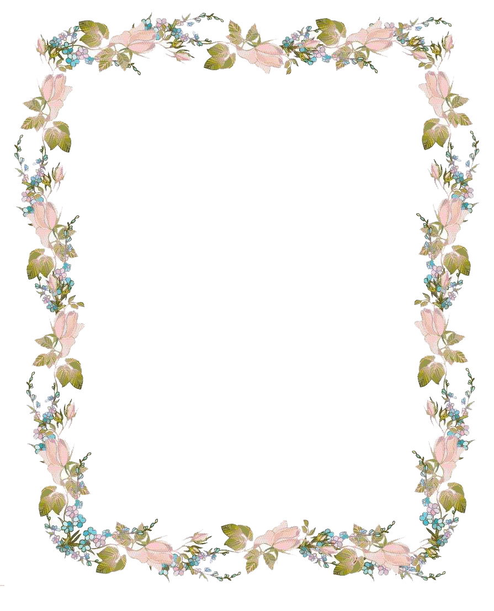

第一次向你要微信的时候心情超级紧张(//▽//)
成功要到后兴奋的一晚没睡着o(〃’▽’〃)o
之后和你交流发现你三观超正的(๑•̀ㅂ•́)و✧
可是我很少和女孩子交流，不会哄女孩子(,,•́ . •̀,,)
但是这不是理由，在日后的相处中我会努力改变的(ง •̀_•́)ง
以前都不知道jk这类服饰，但是看你穿过后就难以忘怀，怎么可以这么好看！有时候都在想这是仙女穿的衣服么，我每个月发了工资都给你买一套好不好
雨萱：雨中的忘忧草,愿你永远无忧。
Send
烟花